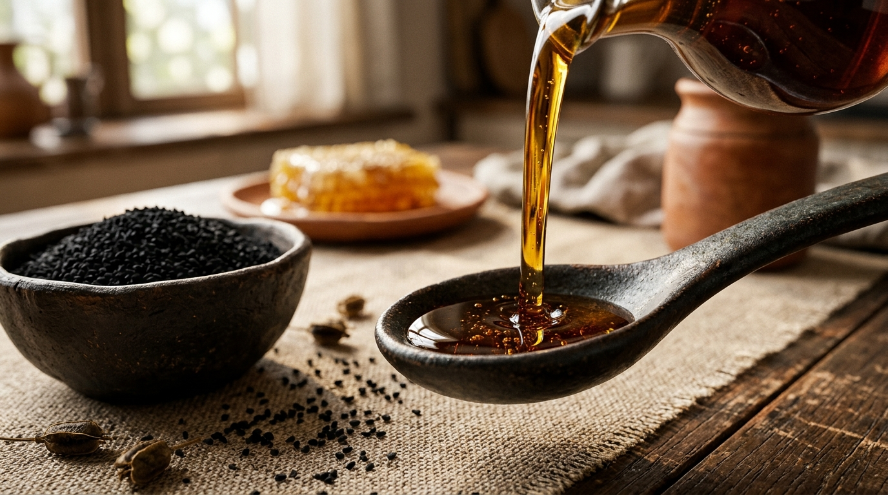
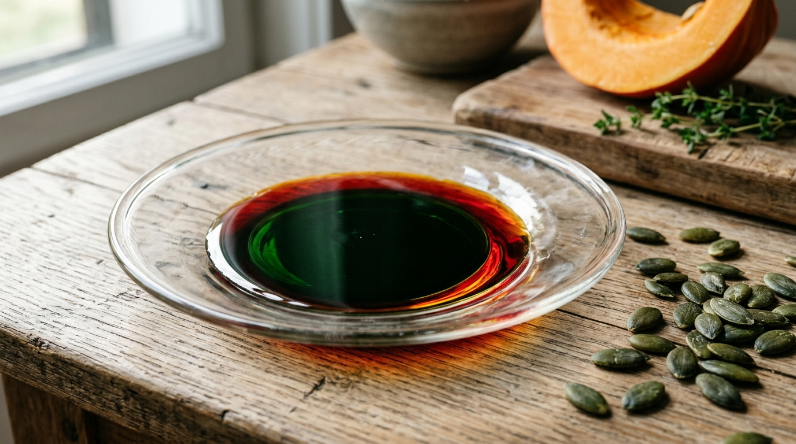
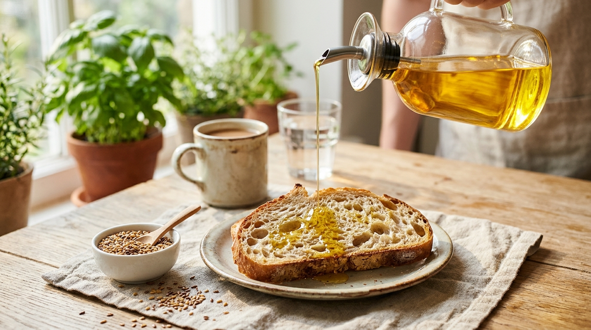
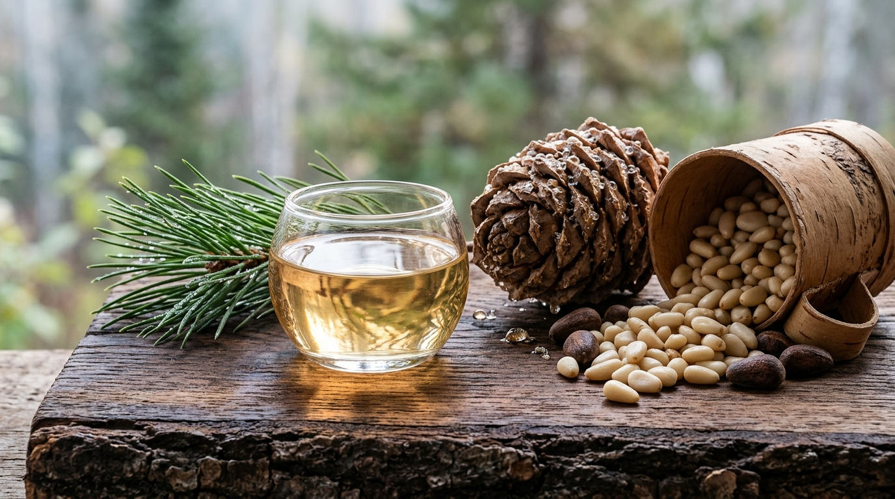

Статьи о живых сыродавленных маслах
Факты, технология бережного отжима в капролоне и культура употребления живых масел. Без рекламной патоки и без выдуманных обещаний.

Масло чёрного тмина: как правильно принимать, особенности и противопоказания
Как традиционно принимать масло тмина с мёдом, за что отвечает тимохинон и кому этот пряный концентрат противопоказан.
Читать статью →
Тыквенное масло холодного отжима: вкус, свойства и кулинарное применение
Почему свежее тыквенное масло меняет цвет с зелёного на рубиновый (дихроматизм), природный цинк и как использовать его в крем-супах и салатах.
Читать статью →
Сыродавленное масло против магазинного: в чём реальная разница технологий
Чем бережный гидравлический отжим в капролоне отличается от промышленного шнека с нагревом семян. Калькулятор честной себестоимости ремесленного масла.
Читать статью →
Льняное масло без горечи: как правильно выбрать, хранить и использовать
Свежее льняное масло имеет нежный ореховый вкус. Почему появляется горечь, чем отличается золотистый лён и как правильно хранить бутылку в холодильнике.
Читать статью →
Кедровое масло первого отжима: вкус, свойства и как отличить настоящее
Сливочный ореховый вкус, пиноленовая кислота и природный витамин E. Как отличить чистое масло из кедрового ядра от магазинного фальсификата.
Читать статью →
Капролоновый бочонок или дубовая бочка: на чём отжимают живое масло без горечи
Почему дуб накапливает окисленные жиры и портит вкус свежих семян. Физика пищевого капролона в стальной гильзе и закрытый капельник без контакта с воздухом.
Читать статью →Попробуйте масло до того, как платить
Приходите на Центральный рынок Калининграда: отожмём при вас, нальём в ложку, покажем семечку и пресс.